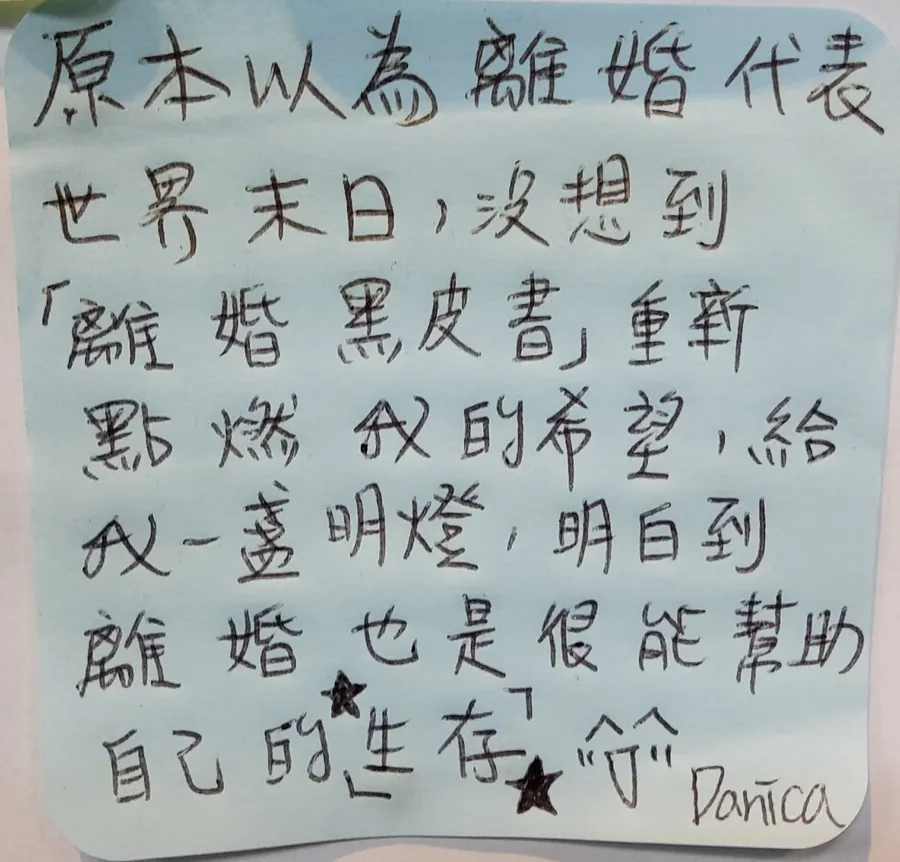
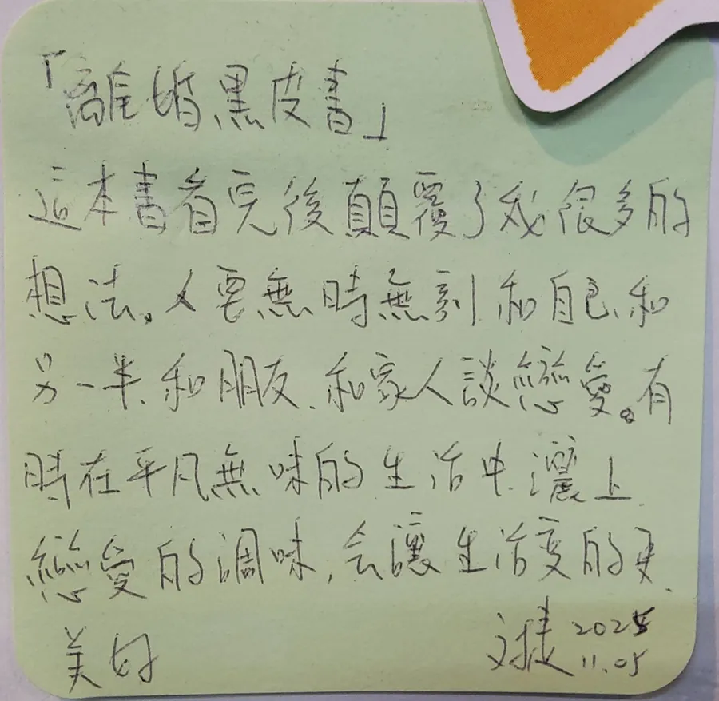

這本書適合你，如果……
- 你的婚姻正在卡關，想冷靜看清楚。
- 你離過婚，或正要嫁娶離過婚的人。
- 你想把婚姻經營得更長久。
給目前的關係打個分數
取材自書中「給自己的婚姻打個分數」與「找出問題癥結」。回答兩個問題，看看哪幾章最適合你先讀。
想看完整的方法與故事？或看三本一起讀 NT$1,000我想讀這本
看影片，認識《離婚黑皮書》
看影片，更認識這本書。
這本書顛覆的四個觀點
- 01
先結婚，再談戀愛
婚後作息穩定、心無旁騖，才能真正安心且專一地，創造專屬於兩個人的浪漫。
- 02
愛情是一杯白開水
組合成分只有「你」跟「我」。摻雜太多面子與條件，只會讓感情失去純粹與滋味。
- 03
不懂離，怎麼懂合？
不逃避失去的可能，才能以坦然無懼的心，真正擁有一輩子的美滿感情。
- 04
進步成長是唯一出路
婚姻中的問題，往往是個人的問題；唯有願意改變缺點，才能終結苦難的循環。
這本書在談什麼
用樂觀、輕鬆、科學的態度來探討離婚這件事。既然你能結，就能夠離。當你可以坦然面對「失去」的時候，你才可以真正的「擁有」。
讀完，你可能會帶走
- 六個真實案例與十四個常見問答。
- 它談的是「離」，目的卻是「合」。
編輯想跟你說
- 書名的「黑皮」其實是 happy——作者想用豁達、科學的角度，談一件大家都不敢輕鬆談的事。
- 核心是一種逆向思考：當你能坦然面對「失去」，才可能真正「擁有」一段婚姻。
- 收錄六個真實案例與十四個常見問答，涵蓋自己離過婚、嫁娶離過婚的人等各種狀況。
- 適合婚姻正卡關、或想把婚姻經營得更長久的人——它談的是離，目的卻是合。
書中的真實故事
點一個名字，看看她走過了什麼。
Christina
從盲目討好到勇敢做自己，重獲幸福婚姻的真誠之路。
Aggie
走過痛苦的執著，學會在無法再愛的時候體面放手，重拾自信。
Chole
換一個人真的會更好嗎？看清自己的缺陷，才是解脫的關鍵。
迷思破解
冷戰會不會比吵架好？
都不好！吵架傷體力，冷戰傷心力。冷戰是精神上的分居與不溝通，建立健康的溝通模式，才是幸福的出路。
我不想離婚，但對方堅持要離，覺得好委屈怎麼辦？
委屈，是因為把解脫寄託在別人身上。唯有自己主動學習與進步、擴充心胸，才能真正走出陰霾。
讀者的話
讀完這本書會發現，分開不一定是失敗，而是「放愛一條生路」的溫柔成全。
封面上的「能離，才能合」是很深的學問。能坦然面對「失去」，才是真正「擁有」美滿婚姻的起點。
我喜歡「愛情本是一杯純粹的白開水」的比喻，不該滲入面子與世俗條件的雜質。
再看 2 則讀者心得
作者將婚姻經營巧妙比擬為企業管理，強調兩人之間必須建立緊密且通暢的「溝通線路」，這一點我很有體會。
我認同書中提及婚姻危機往往不是對方的毛病，而是個人缺乏溝通與自我修正能力的警訊。離婚並不可怕，盲目執著於受害者情緒而不願進步成長才是真正的陷阱。
看讀者的手寫心得（2 張）


讀過這本書嗎？分享你的讀後感
一起讀，走得更遠
走過婚姻的難關，三本一起讀


三本一起帶走：NT$1,140 NT$1,000